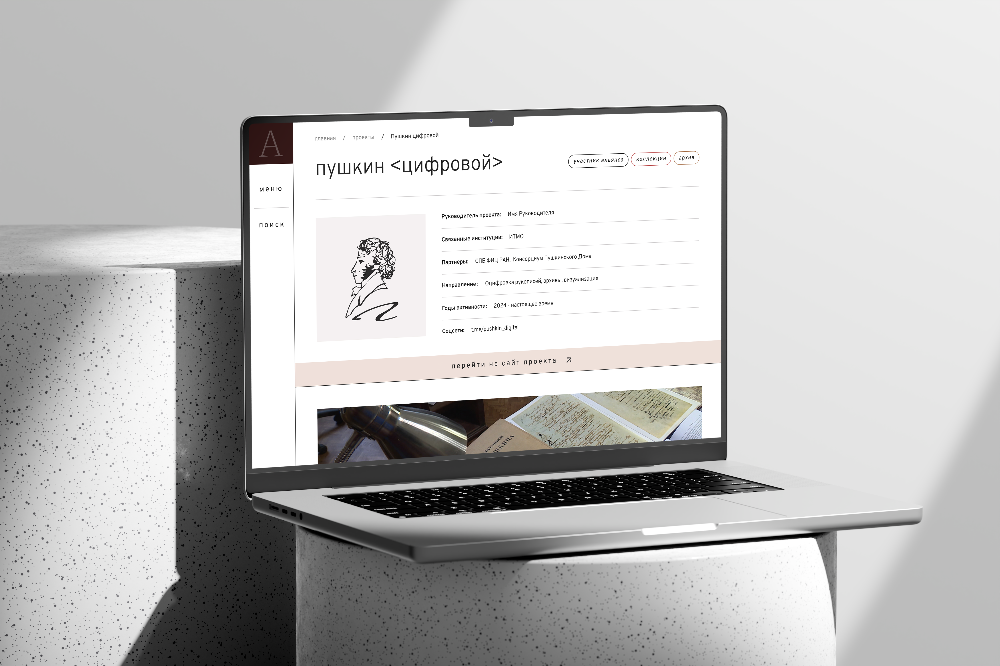
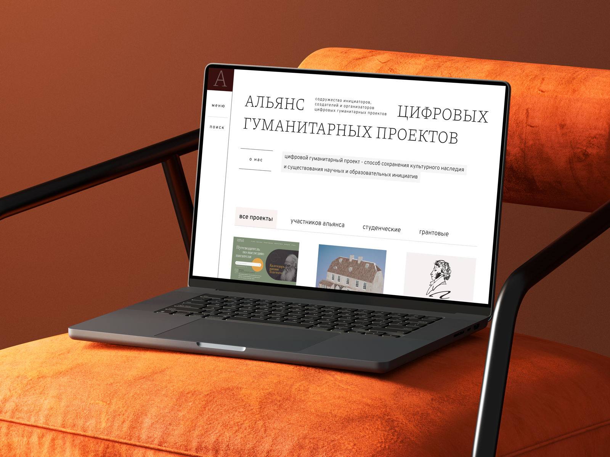
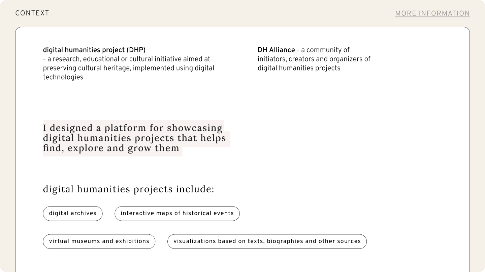
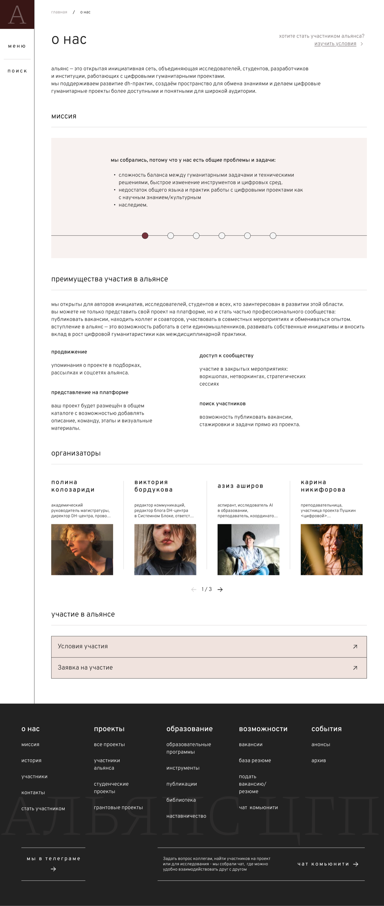
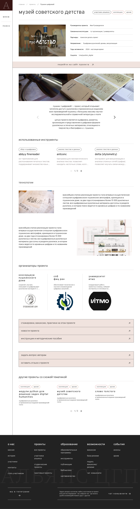

DH Alliance
Digital Humanities Platform


DH Alliance is a platform for discovering digital humanities projects, job opportunities and tools.
It helps students and early-career researchers find relevant initiatives,
connect with specialists and navigate a fragmented professional field



Students and early-career researchers have no single place to discover projects, tools, communities and relevant opportunities. Researchers also struggle to connect with technical specialists, while communities remain scattered across different platforms
Design Process

1/8 Context
Digital humanities projects, from digital archives and virtual museums to text-based visualizations and interactive historical maps, preserve cultural heritage, yet they are hard to find online
Screens

